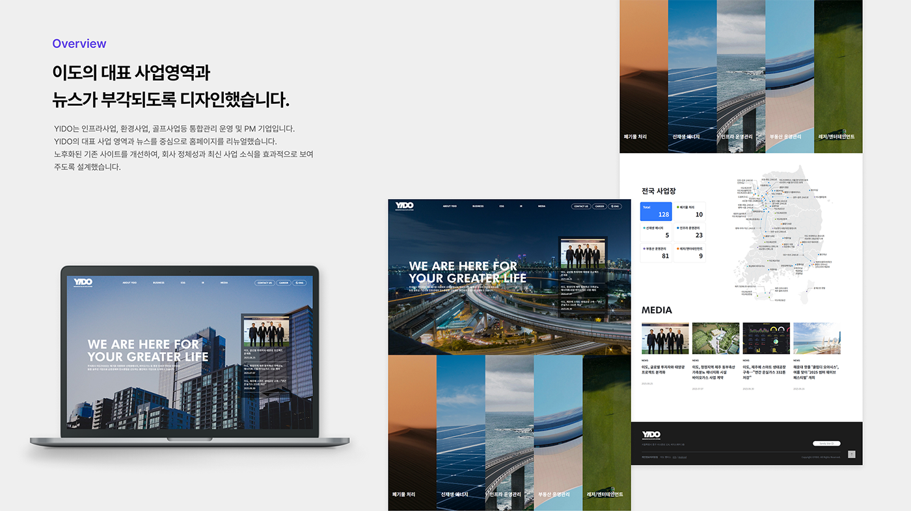
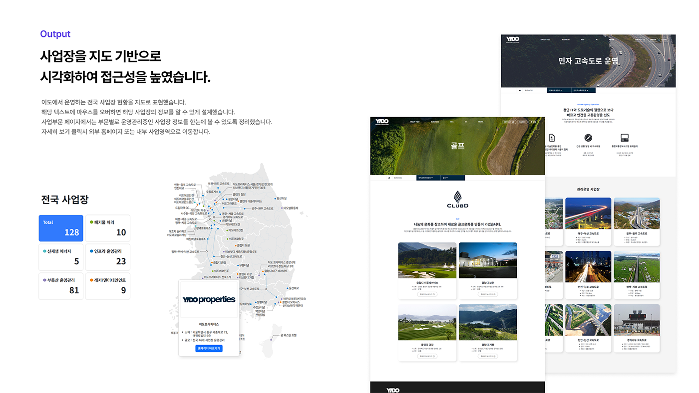
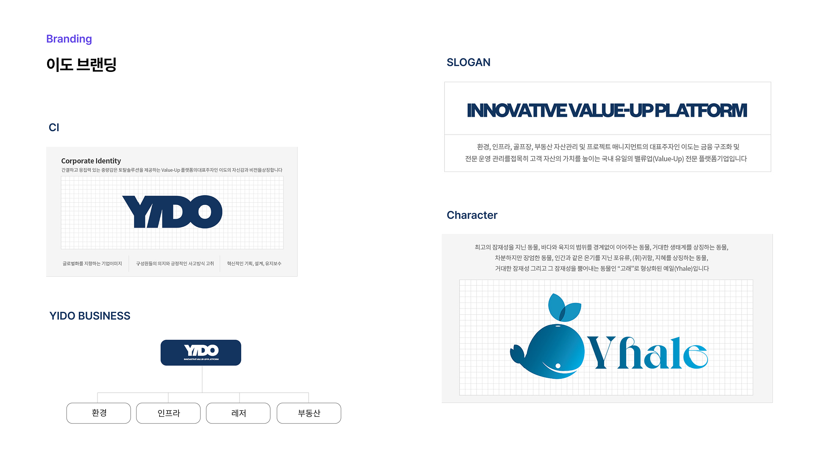
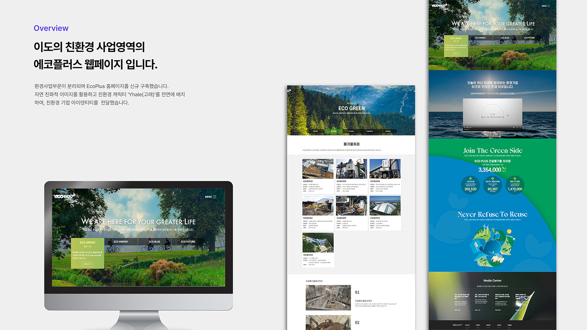
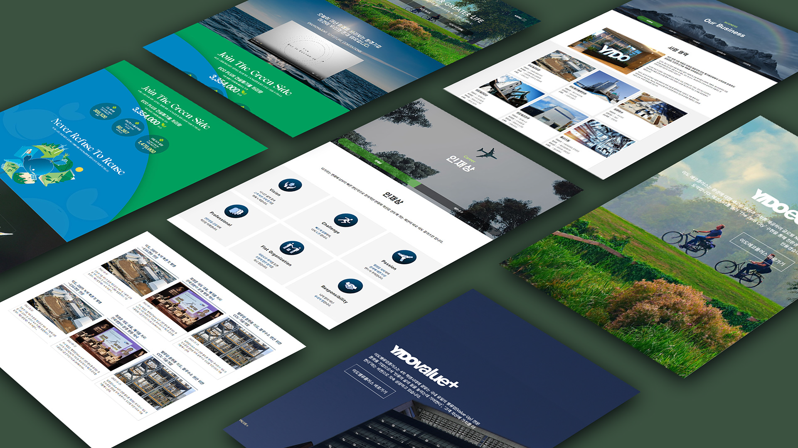
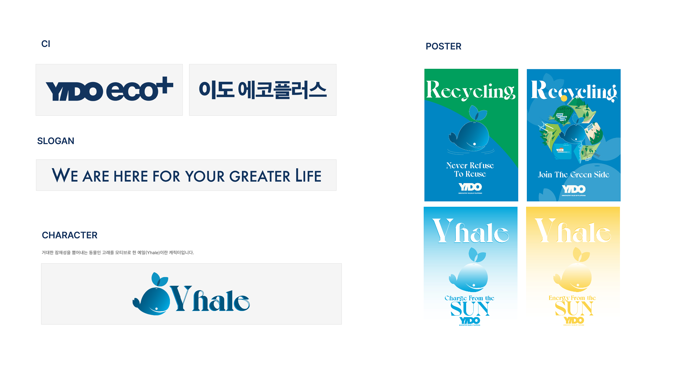

브랜드 정체성을 담은 디지털 서비스예요
이도는 오프라인에서 쌓아온 브랜드 감성을 디지털 채널에서도 일관되게 전달하는 웹·앱 통합 서비스입니다. 브랜드 스토리 탐색부터 온라인 상담·예약, 방문 후 리뷰까지 온·오프라인이 자연스럽게 연결되는 통합 고객 여정을 설계했습니다.
브랜드를 이해하고 정보구조를 설계했어요
브랜드 워크숍과 고객 인터뷰를 통해 이도가 추구하는 가치와 실제 사용자가 기대하는 경험 사이의 간극을 파악했습니다. 이를 바탕으로 브랜드 스토리 중심의 정보구조(IA)와 온·오프라인 연결 유저 플로우를 설계했습니다.


브랜드와 경험을 하나로 통합했어요
이도만의 고유한 감성을 디지털로 표현하기 위해 비주얼 레이아웃, 타이포그래피,
인터랙션 하나하나에 브랜드 철학을 담았습니다.
시각적으로 일관되면서도 사용하기 편한 두 가지 목표를 동시에 달성하기 위해
컬러 토큰, 타이포그래피 스케일, 이미지 톤앤무드 가이드를 포함한
디지털 브랜드 시스템을 구축했습니다.
디지털 브랜드 일관성 확보
경험하는 이머시브 레이아웃
온·오프라인 전환율 제고

주요 화면을 설계했어요
홈·서비스 탐색·상품 상세·예약·마이페이지까지 주요 화면 전반에 브랜드 감성을 일관되게 유지하면서 직관적인 사용성을 구현했습니다. PC 웹과 모바일 앱 모두 반응형으로 최적화해 어떤 디바이스에서도 동일한 브랜드 경험을 제공합니다.



프로젝트 회고
이도 프로젝트를 통해 브랜드 디자인과 UX 디자인이 어떻게 유기적으로 연결되어야 하는지 배울 수 있었습니다. 비주얼 아이덴티티가 단순히 예쁜 화면을 만드는 것이 아니라 사용자 경험 전체를 이끄는 힘이라는 것을 깨달았습니다.